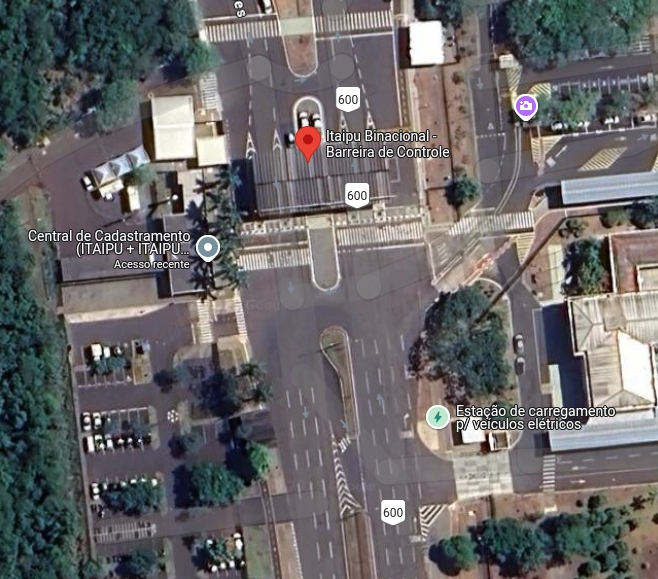

  <section id="light-card">
    <div class="p-2 container col-sm-12 col-lg-8 text-justify">
        <h2 class="p-4 text-center">Cadastramento Parquetec - IMPORTANTE!</h2>
       <p class="lead">Este ano a ERAD/RS será realizada no Parquetec Itaipu, local que possui um maior rigor na questão de segurança.
         Por isso, todos os participantes inscritos deverão, em seu primeiro acesso ao parque, fazer seu credenciamento e a retirada de crachá na "Central de Cadastramento", que fica ao lado da 
         Barreira de Controle da Itaipu. Haverá um banner da ERAD/RS identificando o local. Portar documento com foto. </p>

      


      <p class="lead">Os crachás serão previamente gerados a partir das informações das inscrições. Não será possível o acesso ao Parquetec sem esse cadastramento inicial na Central!</p>

      <p class="lead">É proibida a entrada no território binacional com bebidas alcoólicas, substâncias inflamáveis, armas e objetos cortantes.</p>
      
    </div>
  </section>
